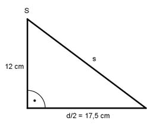

Aufgabe 245 Der Abschluss eines Rohres ist eine kegelförmige Haube mit einem Grundkreisdurchmesser von 35 cm und einer Höhe von 12 cm. Wie groß ist der Blechbedarf zu ihrer Herstellung und der Radius des benötigten Kreisausschnitts?  Satz von Pythagoras zur Berechnung der Mantellinie s: s² cm² = 12² cm² + 17,5² cm² s² = 144 cm² + 306,25 cm² = 450,25 cm² |√ s = Radius des Kreisausschnitts = 21,2 cm Mantelfläche M = л * r * s M = л * 17,5 cm * 21,2 cm = 1 165 cm²